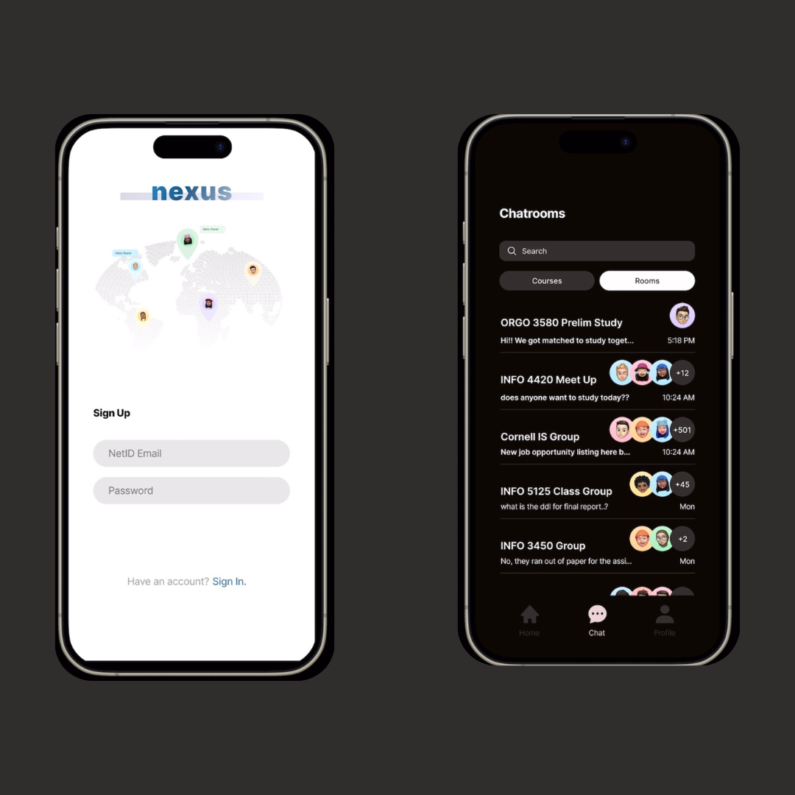
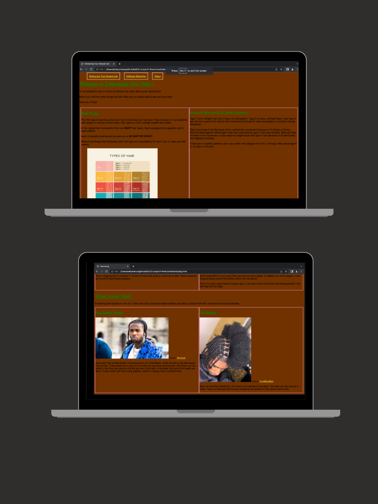
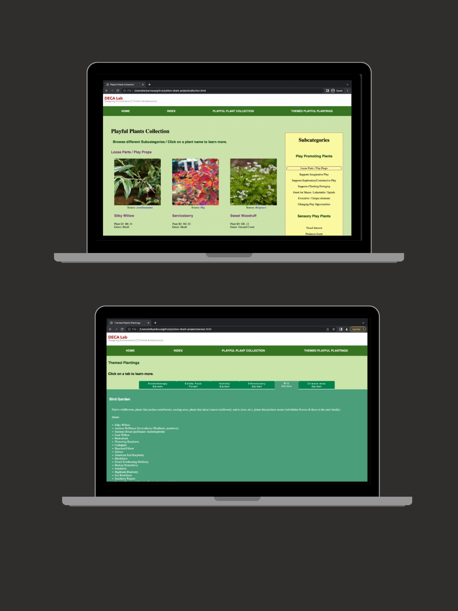
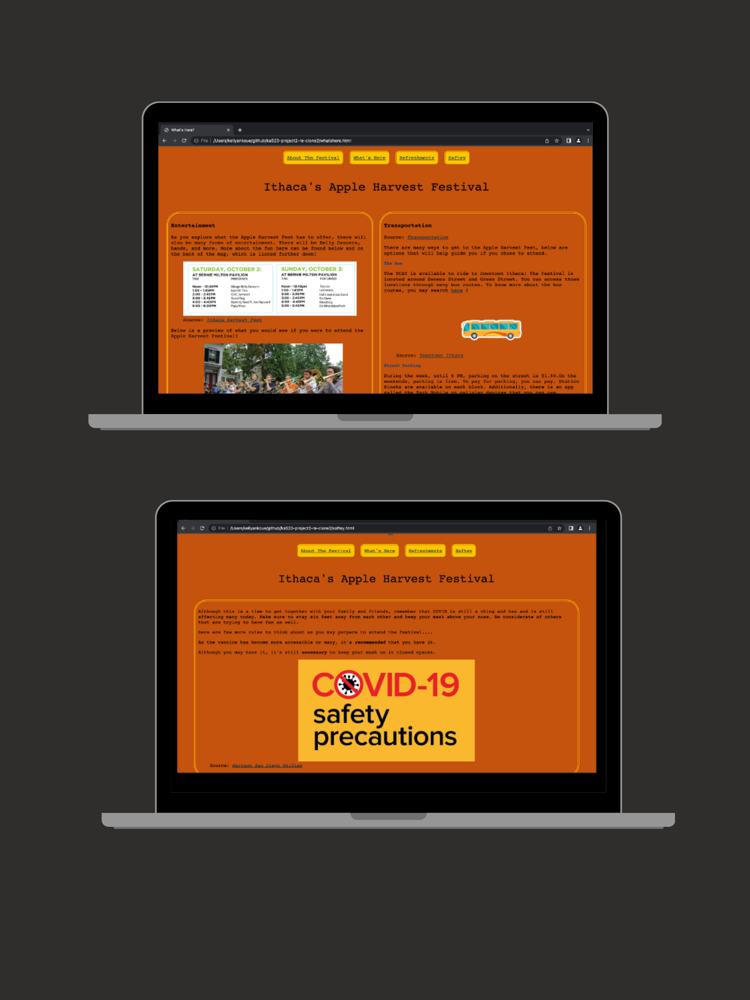
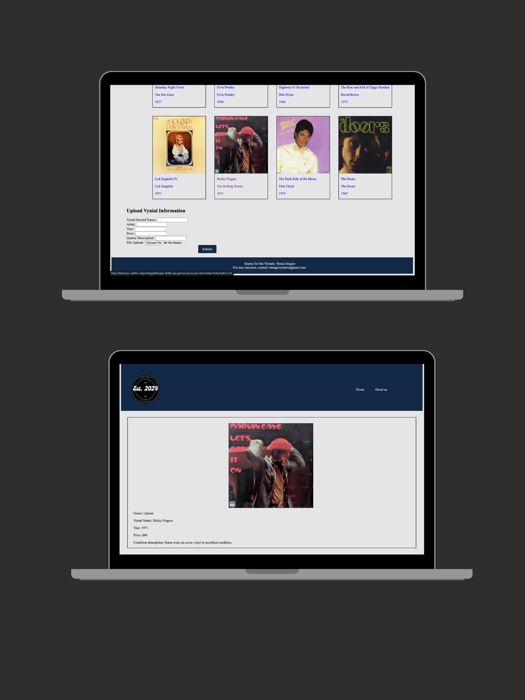

Selected work
UX research, end-to-end design, and case studies - focused on accessible experiences for communities that technology most often underserves.
Healing Without Bias
A public platform making healthcare law, Medicaid policy, and civil rights protections readable for Black women with no legal background. Designed for communities most affected by the coverage gap.
Healthcare law is written for lawyers. The communities most affected by the Medicaid coverage gap have the least access to plain-language explanations of their rights. Existing resources either buried information in jargon or oversimplified it to the point of inaccuracy.
- Researched healthcare law, Medicaid policy, and civil rights protections to ground every content decision in accurate regulatory frameworks
- Organized content around how users ask questions, not how statutes are structured
- Ran iterative layout and content audits, testing hierarchy and wayfinding across multiple review cycles
- Applied accessibility-first design for audiences with varying digital literacy
A six-page live platform presenting civil rights protections, eligibility information, and advocacy resources in clear, accurate, readable content. Built and deployed as a public site.
Nexus
A mobile platform removing institutional barriers for transfer students. Led end-to-end from user interviews through a fully tested Figma prototype.
Transfer students arrive without the social networks or institutional knowledge first-years build over time. Existing tools were not designed for their onboarding needs.
- Ran 10+ user interviews with transfer students and advisors to surface real friction points, not assumed ones
- Used affinity mapping to identify five core themes; prioritized resource discovery as the highest-impact gap
- Redesigned navigation from resource type (how the institution thinks) to situation (how students actually look for help)
- Iterated across two full prototype rounds; second iteration resolved the four highest-severity usability issues

Ithaca Soap
Cross-functional client project for a real local business. User interviews, six affinity diagram themes, multiple design iterations, and a fully coded accessible prototype delivered in one semester.
Design a mobile app for Ithaca Soap, a real local business. Target customers wanted to make sustainable choices but did not know how to evaluate ingredients or trust "natural" claims. We had to design for skepticism, not just for purchase.
- Interviewed grocery and household product shoppers; synthesized findings into six affinity diagram themes including Ingredient Comprehension, Purchasing Patterns, and Defining "Natural"
- Developed a persona grounded in interview data: a busy person who cares about sustainability but finds ingredient research overwhelming
- Ran structured brainstorming, evaluated five solution directions against client goals and feasibility, and converged on a three-feature app
- Iterated across multiple design drafts with client and instructor feedback at each milestone
- Coded the final prototype to high-fidelity using real development tools and Git workflows
TikTok Creator Tools
Product strategy and UX case study identifying misinformation risks in TikTok's creator editing flow. Redesigned with transparency indicators and friction prompts, validated through Figma prototypes.
TikTok's creator tools made it frictionless to heavily edit content before publishing, with no transparency to viewers. Structurally easy to spread misinformation without intent. The design question: how do you add accountability without breaking what makes the platform work?
- Conducted heuristic analysis against Nielsen's 10 usability principles; benchmarked YouTube Studio and Instagram for existing transparency patterns
- Mapped five usability gaps, ranked by severity and feasibility
- Ideated three intervention directions and built high-fidelity Figma prototypes for the two strongest
- Validated through usability testing; friction prompts at publish outperformed disclosure labels
Early web projects
My first website: a resource site celebrating natural hair textures for Black men and women. Built with HTML and CSS - cultural identity as the design brief.

An interactive plant safety database for caregivers built with HTML, CSS, and JavaScript in collaboration with Cornell’s DECA Lab. Designed for child safety environments.

Rebuilt the Ithaca festival website with accessibility and responsive design as the primary brief - color contrast, mobile layout, and navigability for a diverse public audience.

A full-stack vinyl marketplace with PHP backend - led server-side development including secure login, seller dashboards, buyer browsing, and admin moderation panel.
